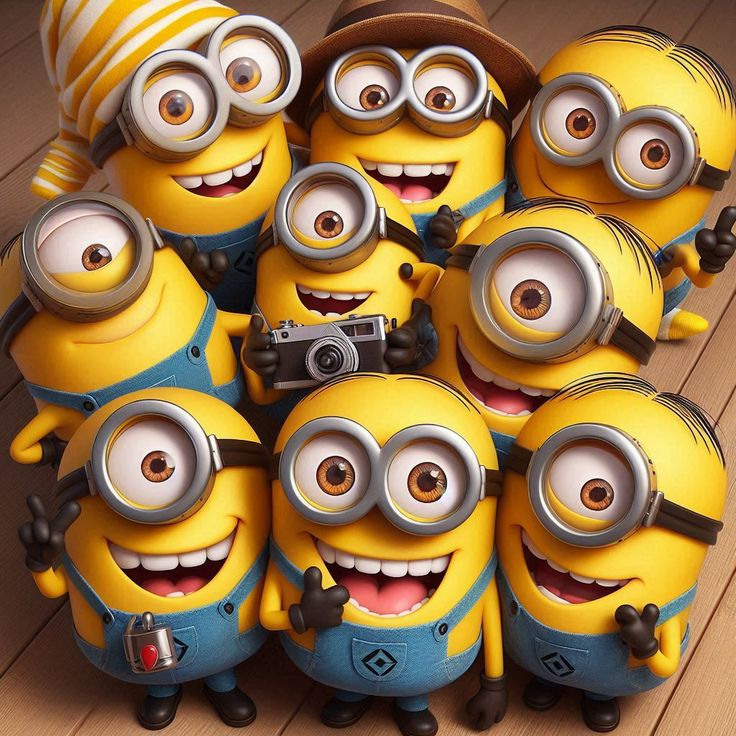
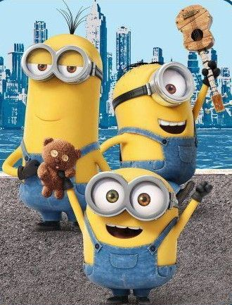
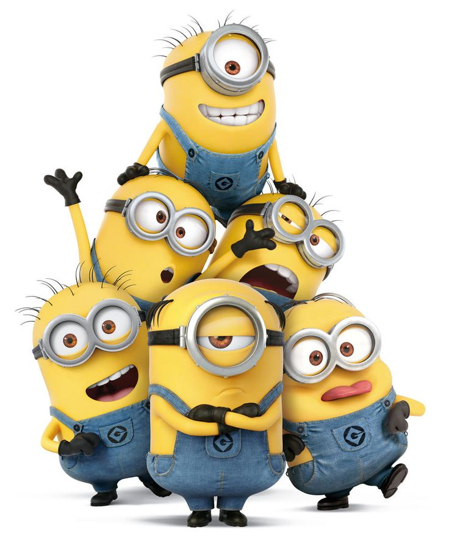
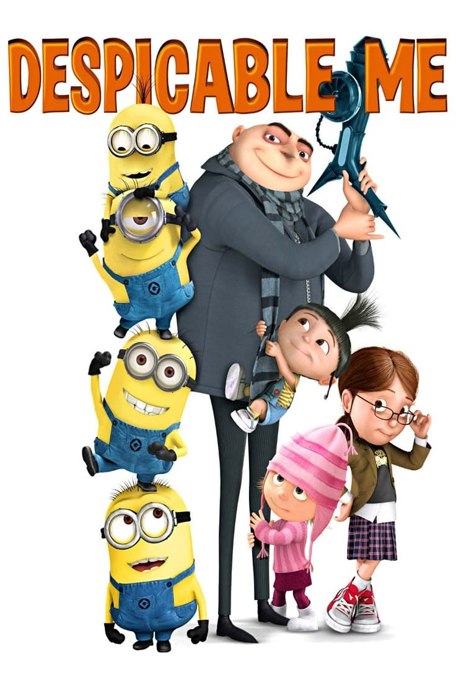
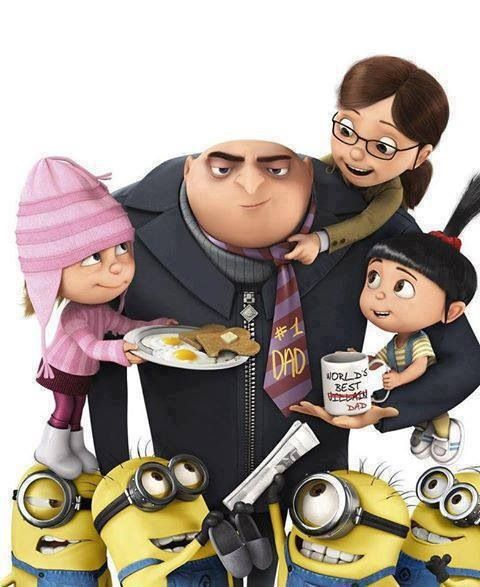

Persahabatan yang Solid
Dalam setiap misi, kekacauan, dan petualangan, Minions selalu punya satu hal yang tak tergantikan: persahabatan sejati. Mereka tertawa bersama, gagal bersama, dan selalu saling dukung tak peduli seberapa aneh situasinya. Persahabatan mereka adalah kekuatan super yang membuat kisah Minions selalu hangat dan penuh tawa.





